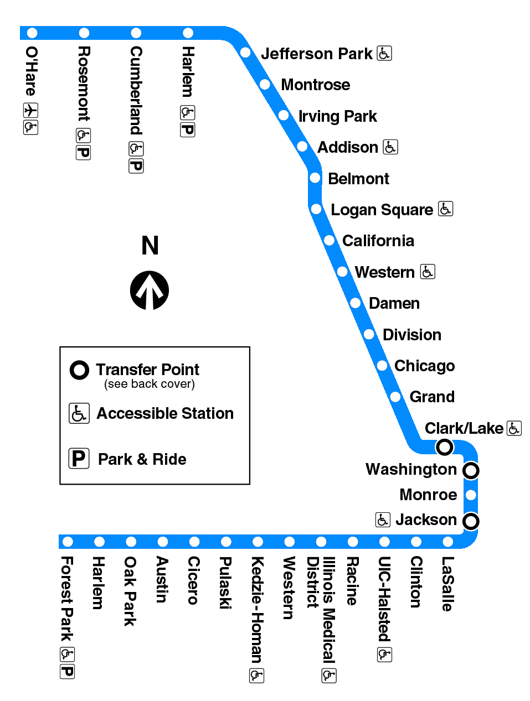
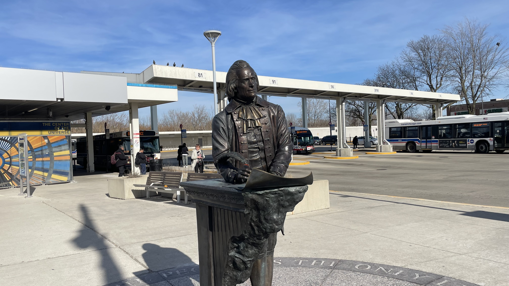
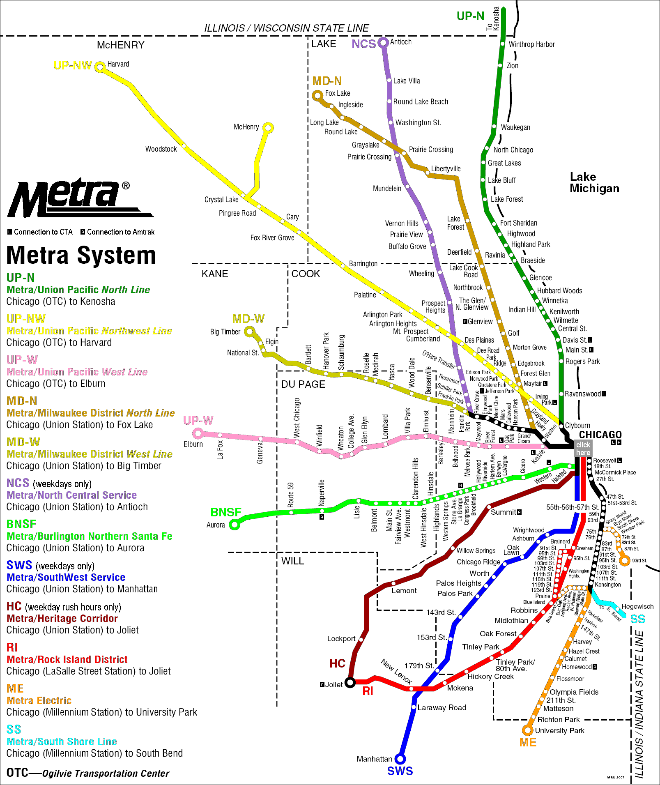

Jefferson Park is home to a major transportation hub for both the CTA and Metra as it functions as a stop for buses, the subway, and the commuter rail. As a result, is a widely used as a transfer stop between the three.
The Blue Line starts at O'Hare, passes through Jefferson Park, and terminates at Forest Park. The train stops at the Loop, too, which makes it a great method of transportation for both those who commute to the downtown area and travelers who need to get to and from O'Hare.

The CTA also has many bus lines that pass through the terminal. These include the #56, #68, #81, #81W, #85, #85A, #88, #91, #92; Pace Buses #225, #226, and #270. The variety of bus lines helps commuters get to where they need to be, no matter if they took the Blue Line or the Metra to Jefferson Park. Additionally, the #56 goes to Downtown Chicago and stops at Ogilvie Transportation Center, where the Union Pacific Northwest Metra train terminates.

Last but not least, the transit hub houses a Metra UP-NW stop. This line begins at the Ogilvie Transportation Center and terminates at either Harvard or McHenry. Despite the destination or whether or not the train is running express, Jefferson Park is very often a stop. This makes it perfect for those who missed their regular trains as they can catch the express train without missing Jefferson Park.
